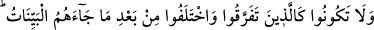
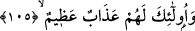

Hakiki hayra çağıranlar tasavvuf uluları ve mâneviyat pîrleridir. Çünkü mutlak hayr
insanın Hakk’ı bilme ve O’na varma konularındaki mertebesine göre elde ettiği mutlak
kemâldir. Hz. Peygamber (a.s.)’deki kemal gibi. Allah’ı bilmeyen hayrı ne bilir?
Kendisi ile mutlak doğruya ulaşılan şey izâfidir. Dâvet edilen hayr; ya Hak’tır ya da
Hakk’a ulaşma yoludur.
“Mârûf”: Hakk’a yaklaştıran her şeydir. “Münker” de: Hak’tan uzaklaştıran her
şeydir. Tam bir tevhid ve istikamet üzere yaşamayan hiç kimse, hayra dâvet etme
makamında değildir. Çünkü, istikamet üzere olmayan, ne kadar muvahhid olursa olsun,
ola ki hadd-i zâtında münker olduğu halde kendisine göre mârûf olan bir şeyi emreder.
Yine ola ki, kendisine göre münker olup da hadd-i zâtında mârûf olan bir şeyi meneder.
Cem makamına ulaşıp, Hak ile olan beraberliğinden dolayı halkı göremeyenler gibi.
Bunlar da çoğu kez haramı helal; helali haram sayarlar. Bunlar, ehl-i hicâb ve mutlak
kurtuluş erleridir. Bunlar, kendilerinden perde kalkmış kişilerdir; Allah’ın yeryüzündeki
halifeleridir. Allah Teâlâ, cümlemizi hakiki hâlin bilgisine ulaştırsın. Müteâl varlığına;
aşkın katına ulaşma şerefine nâil eylesin.
105. Kendilerine apaçık deliller geldikten sonra parçalanıp ayrılığa düşenler gibi
olmayın. İşte bunlar için büyük bir azap vardır.
“Dağılıp ihtilâf edenler” Tevrat ve İncil ehlidir. Çünkü yahûdîler de hıristiyanlar da
çeşitli gruplara ayrılmışlardır. Meylettikleri değersiz dünya metâı karşılığında hakkı
söyleyen âyetleri gizleyip tahrif ederek, gerçek dışı eserler yazmak sûretiyle ihtilâfa
düşmüşlerdir.
İmam Fahreddin Râzî, diyor ki: “Kitap ehli, büyük âlimlerinden her birinin bir
şehirde başkan olması ile bedenen dağılmışlar; sonra bunlardan her birinin, kendisinin
hak üzere ötekilerin ise bâtıl üzere olduklarını iddiâ etmesi ile ihtilâfa düşmüşlerdir.
Doğruyu söylemek gerekirse, zamanımızın bir çok âliminin de aynı sıfatları taşıdığını
söylemek lâzımdır. Allah’dan afvü mağfiret dileriz.”
“Kendilerine” hakta birleşip tek yumruk olmayı gerektiren ve hakkı açıklayan “açık
deliller” âyetler “geldikten sonra dağılıp ihtilâf edenler gibi olmayın.”
“İşte onlar için “bu ayrılıkları yüzünden âhirette hiç kesintiye uğramadan devam
edecek olan” büyük bir azap vardır.”
Allah Teâlâ, bu ümmete, mârûfu emredip, münkeri meneden kişiler olmalarını
emrediyor; bu da ancak mârûfu emreden kişinin zâlim ve zorbalara karşı bu teklifi
yürürlüğe koyabilecek güçte olmasıyla mümkündür. Bu güç ise, ancak din ve hak ehli
olanlar arasında muhabbet ve ülfet oluştuğu zaman mümkün oluyor. Şüphesiz bütün bu